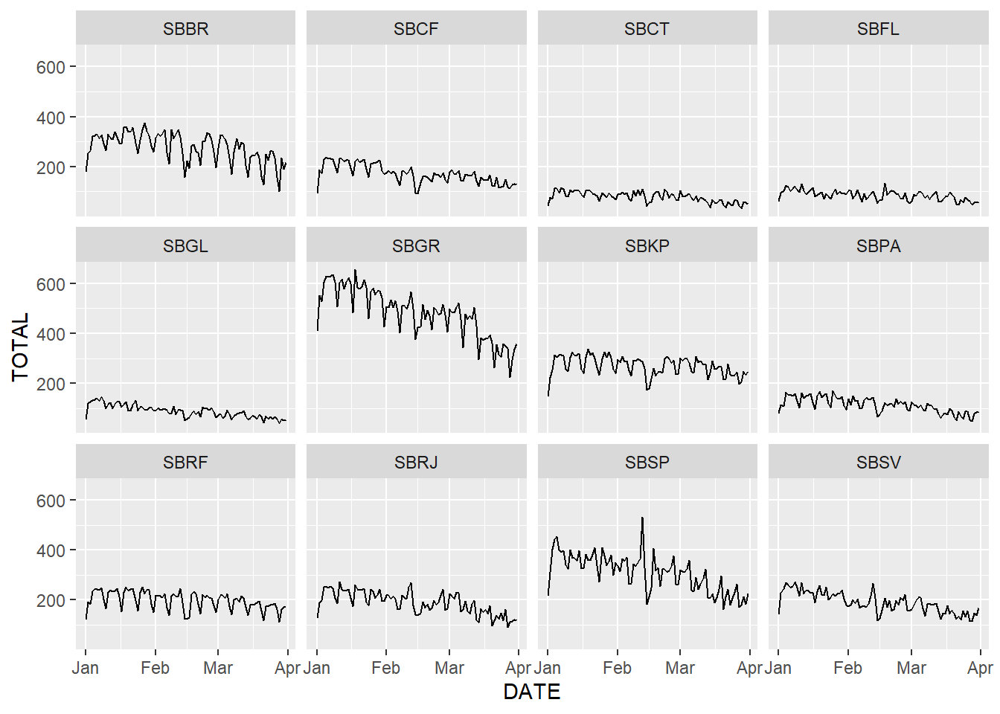
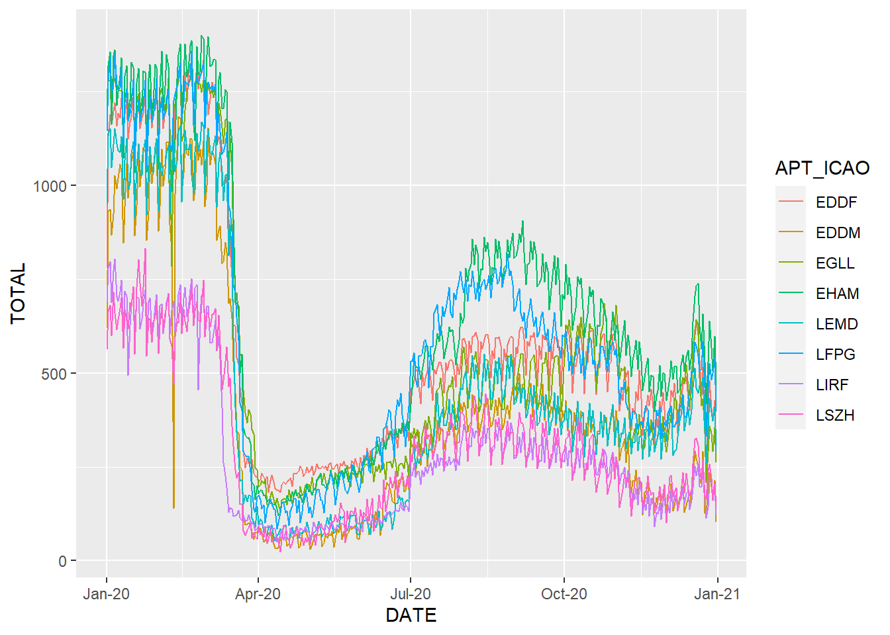

Chapter 5 Airport level breakdown
In 2020, the coronavirus crisis represented very different impacts depending on the airport. Figure n below shows the drop of flight operations (departures and arrivals), in comparison to 2019, at the airports under study. All airports had decreases in their movements, ranging from -36% to -67%. In general, Singapore suffered the most, for the international travels were greatly affected. Brazilian airports had lower impacts than Europe. SBKP Campinas, for example, had -36% - which is not so bad, giving the context. That happened probably due to a larger share of cargo aviation at that particular airport.
Except for Singapore, which has only one airport in the study, it is possible to look the different effects on individual airports within each region.
5.1 Brazil airports

5.2 Europe airports
